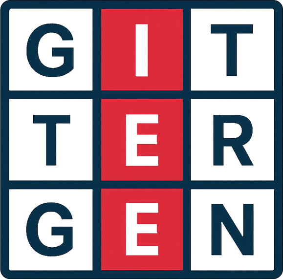

Gitter-ord
Silhuett-ord
Ordsøk
SILHUETT-ORD
1. ENKEL TEKST
Egne ord, ingen bilder
2. ENKEL BILDER
Auto-generert fra liste
3. AVANSERT
Egne bilder & utvalg
Vis ordbank
Vis ordbank på egen side
Vis fasit-side
Legg til skrivelinjer
Tilpassede silhuetter
SKRIV UT (PDF)
NULLSTILL
Skriv egne ord
Med skrivelinjer (maks 8 ord):
Uten skrivelinjer (maks 12 ord):
GENERER
AVBRYT
Auto-generer med bilder
Velg lengde på ordene:
Blandet (2-7 bokstaver)
Kun 2 bokstaver (f.eks. is, do)
Kun 3 bokstaver (f.eks. sol, tog)
Kun 4 bokstaver (f.eks. løve, kake)
Antall bilder per ark:
6 ord (anbefalt med skrivelinjer)
10 ord (kun silhuetter, ikke plass til linjer)
GENERER
AVBRYT
Avansert utvalg
Legg til eget ord med bilde fra PC:
VELG BILDE
Valgte:
0
📄 Uten linjer:
1 side
📝 Med linjer:
1 side
GENERER VALGTE
NULLSTILL VALG
AVBRYT
SILHUETT-ORD
Navn: _________________________________
Oppgave her...
Ordbank
Fasit

 Silhuett-ord
Silhuett-ord
 Ordsøk
Ordsøk